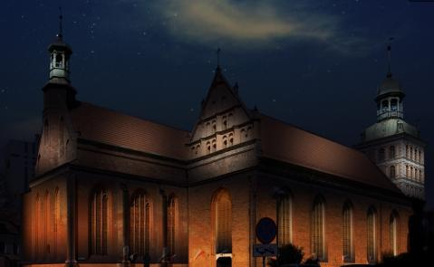
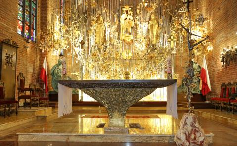
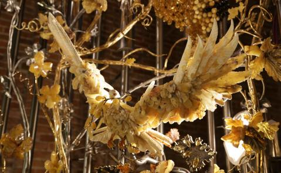
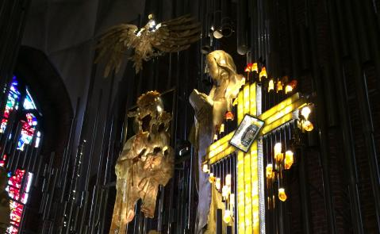
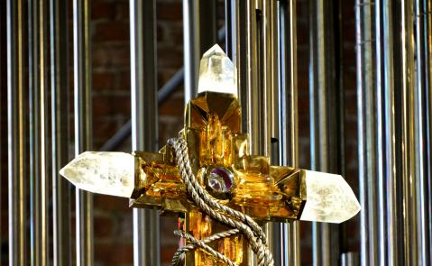

Środa, 30 IX 2026 · wspomnienie św. Hieronima, prezbitera i doktora Kościoła
Czytania: Job 9, 1–12. 14–16 · Ps 88 · Łk 9, 57–62 · liturgia dnia
Msze dziś: 7.00 · 15.00 · 18.30 · zwiedzanie
Aktualności
Najbliższe dni
- Wieczernik dla chorychMsza z modlitwą o uzdrowienie, 18.30
- Pierwsza sobota miesiąca7.00 Msza, 7.30 adoracja z różańcem, Męski Różaniec
- Msza za Ojczyznępoświęcenie bursztynowego krzyża do Ołtarza Ojczyzny
- Bierzmowaniespotkania przygotowawcze dla młodzieży i dorosłych
Ogłoszenia duszpasterskie
W tym tygodniu pierwszy piątek i pierwsza sobota miesiąca. Spowiedź przed każdą Mszą, w piątek także od 18.00 do 19.00. W sobotę o 7.00 Msza, potem adoracja z modlitwą różańcową i Męski Różaniec.
Do końca września trwają zapisy dzieci do I Komunii i młodzieży do bierzmowania — w zakrystii i w biurze parafialnym. Kandydatów zapraszamy co niedzielę na Mszę o 9.00.
Od czwartku październik: różaniec codziennie po Mszy o 18.30, dla dzieci we wtorki i czwartki o 17.00. W niedzielę na Mszy o 9.00 poświęcenie różańców dla dzieci.
Trwa ostatni, III etap prac przy Bursztynowym Ołtarzu Ojczyzny. Można zostać darczyńcą listka, gałązki, kiści winogron albo pszenicznego kłosa.
Są jeszcze wolne intencje mszalne na grudzień — zapisy w zakrystii po każdej Mszy i w biurze.

Zwiedzanie dziś · Visiting today
10.00–18.30
Wstęp to dobrowolna cegiełka na Bursztynowy Ołtarz: 6 zł, emeryci i studenci 5 zł, dzieci 3 zł.
„Przekonacie się, że Ja jestem Panem, gdy otworzę wasze groby…”
Ez 37, 13






Sanktuarium Matki Bożej Ludzi Pracy
Bursztynowy Ołtarz Ojczyzny
Nastawę zaprojektowali prof. Stanisław Radwański, rektor gdańskiej ASP, i bursztynnik Mariusz Drapikowski; konstrukcję wykonali stoczniowcy. Po bokach obrazu Maryi stoją figury św. Brygidy Szwedzkiej i św. Elżbiety Hesselblad.
Trwa ostatni, III etap prac. W nastawie jest już 10 złoconych winorośli z listkami z bursztynu i srebra, na których grawerowane są imiona darczyńców.
Dla parafian
Sprawy, które załatwia się w parafii.
- Msze i nabożeństwaporządek Mszy, nabożeństwa w tygodniu i w ciągu roku
- Sakramentychrzest, I Komunia, bierzmowanie, małżeństwo — terminy i dokumenty
- Intencje mszalnewolne terminy na grudzień, Msze gregoriańskie i suplikacyjne
- Wspólnotyministranci, neokatechumenat, Żywy Różaniec, śpiew liturgiczny
- Duszpasterzeksięża posługujący w parafii
Dla zwiedzających
Visiting the basilica · Besuch der Basilika
- Godziny i wstęppn–sb 10.00–18.30, nd 13.30–18.30 · opening hours
- Bursztynowy Ołtarznastawa sięgająca sklepienia, ponad 11 m wysokości
- Historia bazyliki i klasztoruparafia, świątynia, klasztor brygidek
- Filmy o bazylicekanał wideo parafii i filmy o historii świątyni
- Confession in your languageEnglish · Deutsch · Italiano · Svenska · Français
- Przewodnicyoprowadzanie po polsku i niemiecku · guides